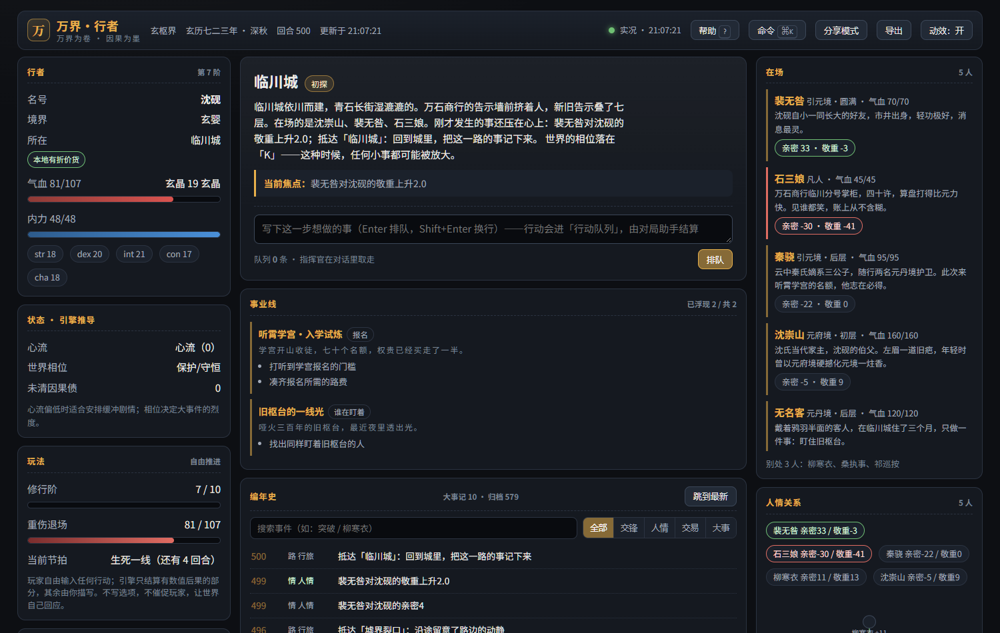
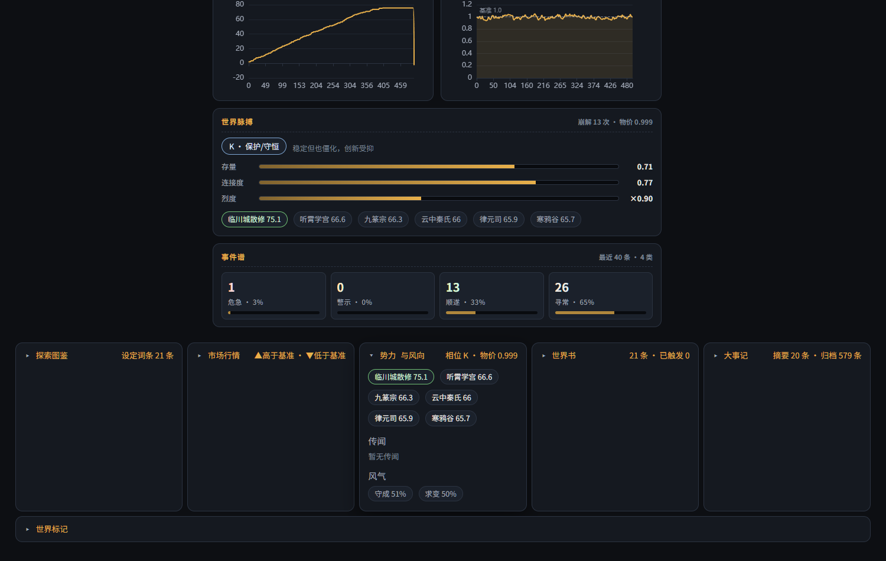
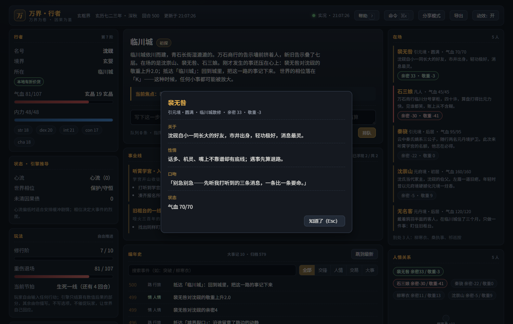
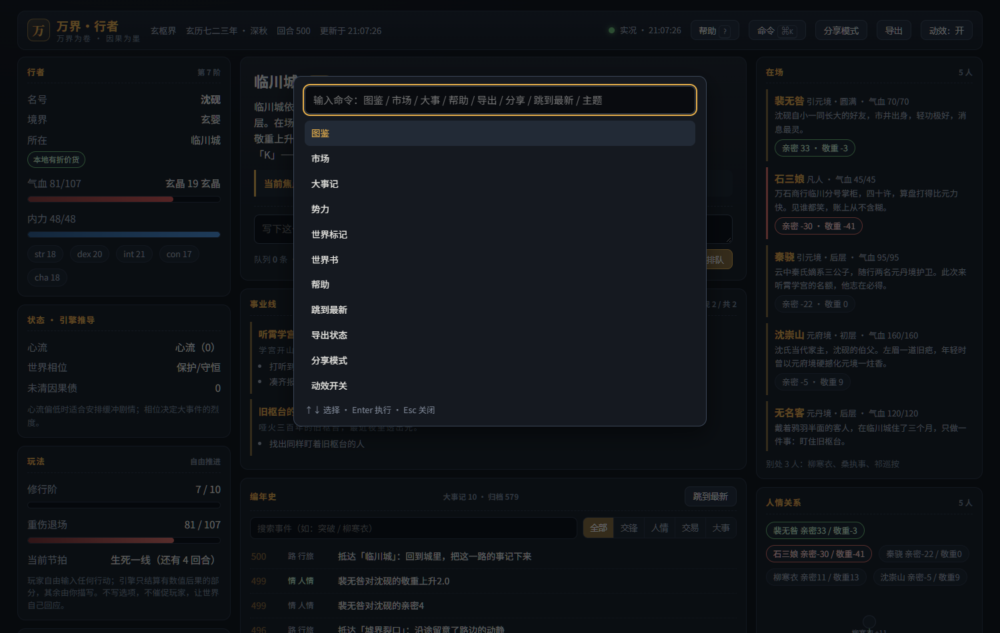
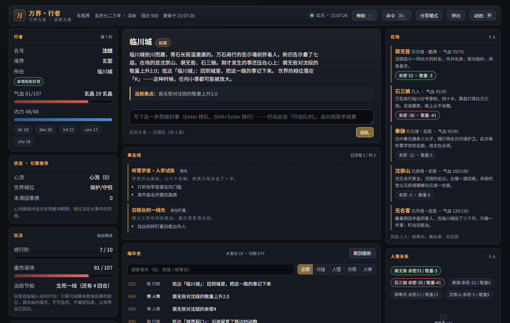
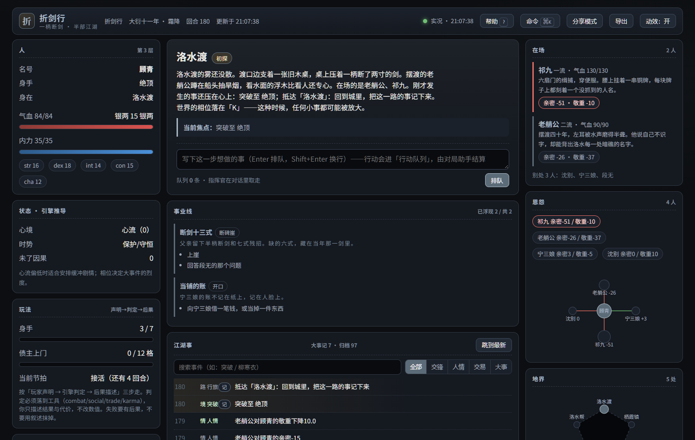
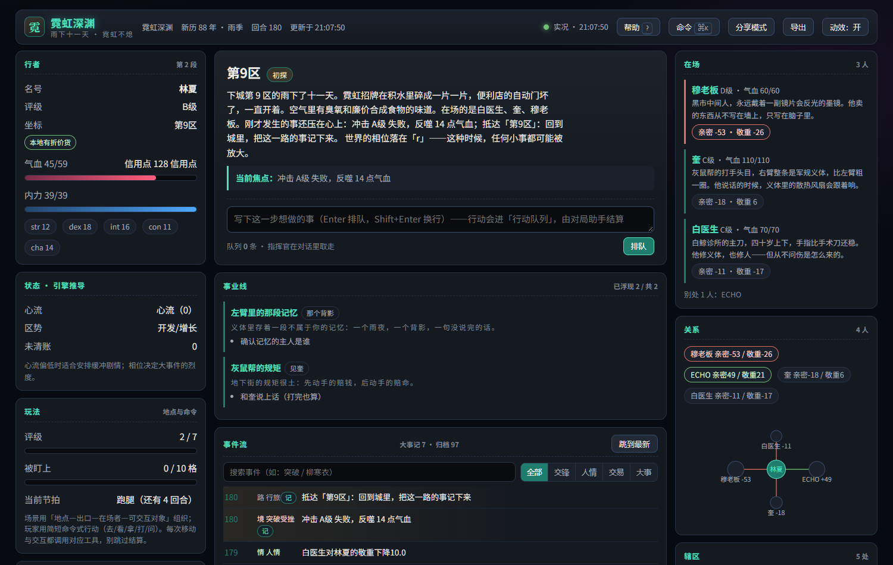
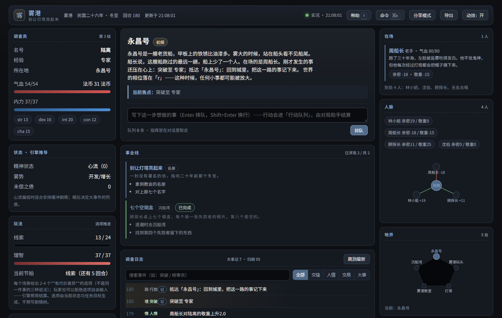

不是聊天窗口，是一块只读仪表盘：叙事正文、身家状态、三张长局曲线、关系网、地点图、 世界脉搏、图鉴与市场。它不能改对局，所以显示的每个数字都可核对。





换世界不改代码：设定包里写清术语、等级阶梯、货币、地点描写、世界书、品牌与皮肤。 面板上不会再出现"境界 / 灵石 / 修行轨"——除非这个世界本就该有。



世界观可换只是第一层。真正决定"这局怎么玩"的是 playbook：
循环类型、进度轴、失败条件、节拍序列、上下文注入策略。规则函数一行不改。
| 设定包 | 玩法循环 | 进度轴 | 失败条件 | 节拍 |
|---|---|---|---|---|
| 玄枢界 | 自由推进 freeform | 修行阶 0–10 | 重伤退场（hp） | 日常修行 → 势力摩擦 → 生死一线（每 6 回合） |
| 折剑行 | 声明→判定→后果 ttrpg | 身手 0–7 | 债主上门（clock 12） | 接活 → 踩点 → 动手 → 代价（每 4 回合） |
| 霓虹深渊 | 地点与命令 mud | 评级 0–7 | 被盯上（clock 10） | 跑腿 → 接头 → 侵入 → 翻车（每 4 回合） |
| 雾港 | 选项推进 choice | 线索 0–24 | 理智（sanity） | 异常 → 线索 → 更深的疑问（每 5 回合） |
stage DAG + 世界状态谓词。任务只声明目标与压力，不声明过程；dormant 的线不显示，没 exit_if 的一幕永不自动推进。
selectiveLogic 四值、概率、sticky/cooldown、同组互斥、递归开关——与酒馆语义对齐，但时间是 tick，可复现。
不是"扣血才算失败"：债主上门、被盯上、理智耗尽都是可配置的失败条件，由 failure_tick 推进。
完整字段、DAG 规则与"不支持项及理由"见 docs/GAMEPLAY.md。
每次 tick 都推进势力消长、谣言传播、风气漂移、NPC 走动与 Panarchy 适应性循环。
不消耗 LLM token，也不需要玩家行动。
每个势力有确定性禀赋上限，logistic 增长 + 头部两家 Lotka–Volterra 温和压制 + 挑战者回流。长期有格局，短期有换手。
SIR 一步传播谣言，Deffuant 有界信任推动风气。业债高、物价异动、相位剧烈时才播种新传闻。
r 增长 → K 守恒 → Ω 崩溃 → α 重组，由真实存量驱动，不是查表。Ω 期事件概率与伤害显著更高。
相位调制事件与战斗，心流调制命中，六维道德调制社交，等级阶梯给战力加成并限制突破。
结构化账本：类型 / 金额 / 债主 / 回合 / 是否结清。未清债务压低突破成功率，并进入"天劫"强度。
摘要 + 大事记 + 世代归档。回退只切换归档文件，绝不删除已写下的历史。
完整对标（含 7 个具名竞品、10 条差距的四类处置）见 docs/BENCHMARK.md。
| 维度 | 常见做法 | 万界·行者 |
|---|---|---|
| 数值由谁决定 | 语言模型生成，容易漂移 | 规则函数结算，同种子逐字节可复现 |
| 世界会不会自己动 | 等你行动；不行动世界静止 | tick 自己推动势力 / 谣言 / 风气 / NPC / 相位 |
| 换世界 | 换提示词与角色卡 | 设定包：术语、阶梯、货币、地点、世界书、品牌、皮肤 |
| 换玩法 | 换前端或换产品 | playbook：四种循环 / 五种进度轴 / 五种失败模式 / 节拍序列 |
| 长局记忆 | 上下文窗口 + 摘要 | 三层记忆：摘要 + 大事记 + 归档（recall 跨世代回捞） |
| 生态兼容 | 各自为政 | 直接读 SillyTavern 角色卡（PNG/JSON，V1–V3）与世界书 |
| 界面 | 聊天流 | 只读实况主舞台：叙事 + HUD + 长局曲线 + 图鉴 + 市场 |
| 可核对性 | 难以复核 | 结构化事件字段；只读工具零副作用；变异测试 36/36 |
没有 pytest 套件，取而代之的是 13 个可执行自检 + 一套变异测试： 断言必须能被"改坏代码"杀死，而不是只被覆盖率统计到。
MCP 客户端（Claude Code / Codex / Cursor / opencode）里加一行即可。也可以只用命令行。
pip install -e ".[mcp]"{
"mcpServers": {
"world-walker": { "command": "world-walker-mcp" }
}
}load_setting(path="settings/玄枢界.setting.json")trade(location="临川城", item="ningyuan_dan",
direction="buy", quantity=2)
social(actor="player", target="shi_sanniang",
event="cooperate")
narration_context(scene_text="万石商行")
publish_prose(text="……")
tick()Playwright 在真实 Edge 中操作真实面板并录制，不是动效演示稿。